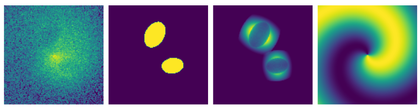

Training of the CADET pipeline
The convolutional neural network was trained on artificial images which were produced from generated 3D beta models (Cavaliere et al. 1978) into which we randomly inserted ellipsoidal cavities. The parameter ranges and distributions used for generating models of galaxies and X-ray cavities were estimated from the measurements of nearby galaxies (for more info see the Diploma thesis). Besides the cavities, we added also other typical features such as central point sources, bright rims around cavities and also antisymmetric spiral perturbations resembling gas sloshing (see image below) to imitate the gas distribution of real galaxies. The produced models were summed into 2D images a noised using Poisson statistics to resemble real Chandra-like images. The corresponding labels were produced similarly by summing the ellipsoidal cavity masks into 2D images and binning them to contain either ones (inside the cavity) and zeros (outside of it).

We have trained two separate networks using different sets of artificial images:
one purely with galaxies containing cavities (CADET_size) and the second with
50 percent of galaxies lacking any cavities (CADET_search). The first network
was further optimized for the proper estimation of cavity sizes, while the second network
was tuned to suppress false positive cavity detections. For both networks, 300 000
artificial images and corresponding labels were generated for training, 10 000 for
validation and 10 000 for testing of the network. Their parameters were drawn from
identical ranges and distributions. Using 64 cores on Intel Xeon Silver 4216 CPU,
the data generation process took nearly 18 hours. The dataset was generated by the
generator.py script, which loads the distributions of the parameters stored in
the CADET_size_params.csv and CADET_search_params.csv files and uses the beta
model class in the beta_model.py module. Functions utilized for generation of
ellipsoids and 3D array rotations contained in the beta_model.py module are inspired
by the pyellipsoid package.
The networks were trained using the ADaptive Moment Estimation (ADAM) optimizer
and the minimized loss function was the pixel-wise binary cross-entropy.
The pipelines were trained for 5 epochs with 8 images per batch while using all of
the training images in each epoch. The training was performed using an NVIDIA GPU
type GeForce RTX 2080 SUPER (8 GiB) and lasted approximately 6 hours for both pipelines.